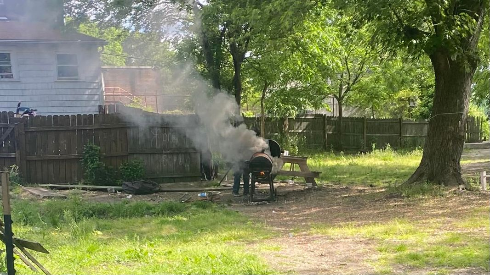

Mobile uploads
Here’s what the smoke looks like when you burn wire. It’s dense, dark and smells like cancer.
I took this picture just now. Our neighbors were yelling out their windows about the smoke. I was yelling about burning wire on my property.
This is one of the reasons we are boarding up this house next week. That and the sex work and drug sales most likely happening out of the house.
Do you know how many times I have told these people to not crap where they eat? It’s a mantra of mine. Stop stealing from your neighbors. Stop drawing attention to yourself if you are doing something illegal.
Now the cops are here.
You have a free place to live and for reasons I can’t fully understand, you screw it up. Is it self sabotage? Is it laziness? It’s not stupidity. These people are plenty smart. Maybe it’s the mental illness and the drugs. Maybe they just don’t care about housing that much.
I would like to be a homeless anthropologist. I learn new insights constantly. But I also have questions I can’t understand.
But I know one thing for a fact. These institutions that think a house is the only thing a homeless person is missing are delusional. Housing First will work for some people. But definitely not all of them. I see homeless people losing totally free housing all the time.
And that ultimately means that the people running homeless services in America don’t really understand the full American homeless condition.
I will be developing a plan for sheltering the entire homeless ecosystem of American homeless people. And then I’m going to start shopping it around America to see if some city somewhere will let me build out my concept.
Stay tuned for that process.